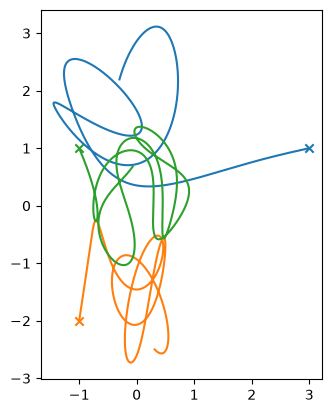
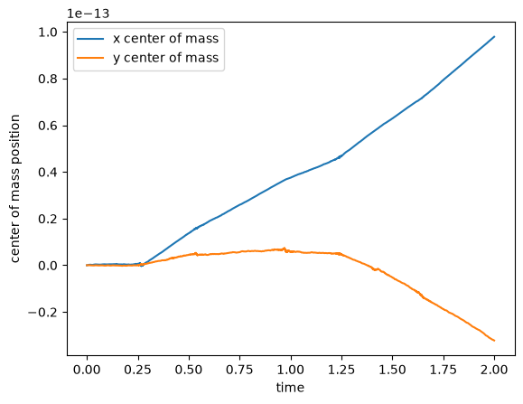
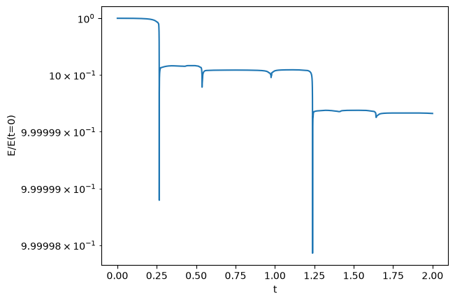
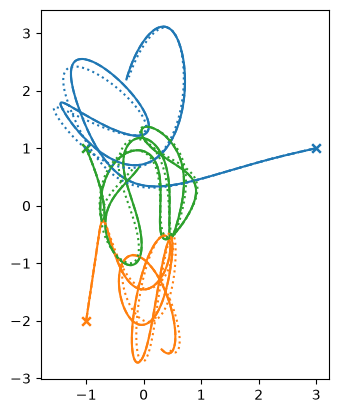
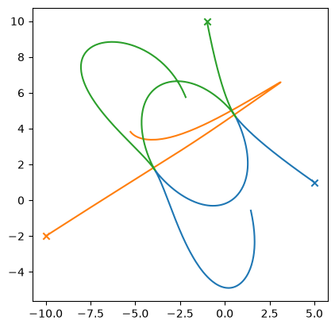
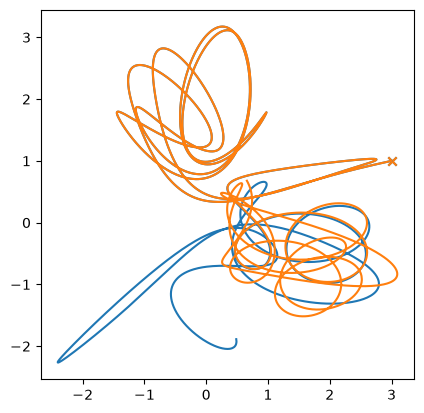

Application: Few Body Problem#
Consider a system of masses (e.g., stars) interacting gravitationally. Each experiences a gravitational force from the others. For \(N\) masses, there are \(N(N-1)/2\) interactions, which means that the work involved in evaluating all of the forces scales like \(\mathcal{O}(N^2)\) for large \(N\).
Note
We’ll solve the “few body” problem under the simplifying assumption that all of the motion is in the \(x-y\) plane.
The evolution equations for the system are:
where \(i = 1, 2, \ldots, N\), and \({\bf x}_i = (x_i, y_i)\) are the coordinates of star \(i\). We can write this as a system of first-order ODEs by introducing the velocity,
Tip
There is one additional bit—if two stars get too close, then the denominator can become very small, and this will greatly impact our timestep. The standard way of dealing with this is to introduce a softening length, changing the equations to:
\begin{align*} \frac{d{\bf x}_i}{dt} &= {\bf v}_i \ \frac{d{\bf v}i}{dt} &= \sum{j = 1; j \ne i}^{N} G m_j \frac{{\bf x}_j - {\bf x}_i}{(|{\bf x}_j - {\bf x}_i|^2 + \epsilon^2)^{3/2}} \end{align*}
where \(\epsilon\) is chosen to be small.
Implementation#
Here’s an implementation for \(N = 3\). Extending it to more stars is straightforward. We work in units with \(G = 1\).
The implementation is here: three_body.py
The flow is basically the same as the orbit RK4 solver we saw. We now store the history in a format like:
stars = [(State, State, State), (State, State, State), ...]
where State is a container that holds a single star’s position + velocity (and knows how to add them and multiply by a scalar).
Each element in stars is a tuple containing all of the star States at a single instance in time.
Try it…
You should try extending this to an arbitrary \(N\). You’ll want to change the interface to allow you to pass in a list of initial particles, or create a method that randomly initializes them.
Explorations#
Let’s explore the few body solver now
import numpy as np
import matplotlib.pyplot as plt
import three_body
M1 = 150.0
p1 = (3, 1)
M2 = 200.0
p2 = (-1, -2)
M3 = 250.0
p3 = (-1, 1)
We’ll use the default softening length for now
tb = three_body.ThreeBody(M1, p1, M2, p2, M3, p3)
We need to select an initial timestep and maximum time
dt_init = 0.5
tmax = 2.0
We also need a tolerance for the adaptive stepping
eps = 1.e-8
Now we can integrate
tb.integrate(dt_init, eps, tmax)
Let’s look at the evolution first
fig, ax = plt.subplots()
for istar in range(len(tb.M)):
x = [star[istar].x for star in tb.stars]
y = [star[istar].y for star in tb.stars]
ax.plot(x, y)
ax.scatter([x[0]], [y[0]], marker="x")
ax.set_aspect("equal")

Now the center of mass—since the stars started out at rest, the center of mass should not move (there are no external forces)
fig = plt.figure()
ax = fig.add_subplot()
t = tb.time
x_cm = []
y_cm = []
for n in range(tb.npts()):
_xcm, _ycm = tb.center_of_mass(n)
x_cm.append(_xcm)
y_cm.append(_ycm)
ax.plot(t, x_cm, label="x center of mass")
ax.plot(t, y_cm, label="y center of mass")
ax.legend()
ax.set_xlabel("time")
ax.set_ylabel("center of mass position")
Text(0, 0.5, 'center of mass position')

We see that it is drifting a bit, but the numbers are close to roundoff.
Now the energy
fig = plt.figure()
ax = fig.add_subplot()
E = []
for n in range(tb.npts()):
E.append(tb.energy(n))
E = np.asarray(E)
ax.plot(t, E/E[0])
ax.set_yscale("log")
ax.set_xlabel("t")
ax.set_ylabel("E/E(t=0)")
Text(0, 0.5, 'E/E(t=0)')

The energy is changing a bit over time—not unexpected.
Softening length#
What about the softening length? Here we’ll try 3 different values and we’ll use different line styles to tell them apart.
fig, ax = plt.subplots()
ls = ["-", "--", ":"]
for n, eps_soft in enumerate([1.e-12, 1.e-6, 1.e-4]):
tb = three_body.ThreeBody(M1, p1, M2, p2, M3, p3, SMALL=eps_soft)
tb.integrate(dt_init, eps, tmax)
for c, istar in enumerate(range(len(tb.M))):
x = [star[istar].x for star in tb.stars]
y = [star[istar].y for star in tb.stars]
ax.plot(x, y, ls=ls[n], color=f"C{c}")
ax.scatter([x[0]], [y[0]], marker="x", color=f"C{c}")
ax.set_aspect("equal")

We don’t see much difference between the smallest 2 choices of softening length, but the solution with the softening length of \(10^{-4}\) definitely looks different.
Initial conditions#
Let’s look at some more initial conditions
M1 = 100.0
p1 = (5, 1)
M2 = 100.0
p2 = (-10, -2)
M3 = 100.0
p3 = (-1, 10)
tmax = 10
eps = 1.e-8
tb = three_body.ThreeBody(M1, p1, M2, p2, M3, p3)
tb.integrate(dt_init, eps, tmax)
fig, ax = plt.subplots()
for istar in range(len(tb.M)):
x = [star[istar].x for star in tb.stars]
y = [star[istar].y for star in tb.stars]
ax.plot(x, y)
ax.scatter([x[0]], [y[0]], marker="x")
ax.set_aspect("equal")

Exercise
How does the solution change if you vary the tolerance used by the adaptive step algorithm?
Chaos#
This system is chaotic—this means that small differences in the initial conditions can lead to very large differences in the evolution with time.
Let’s see this.
We’ll reintegrate our original system.
M1 = 150.0
p1 = (3, 1)
M2 = 200.0
p2 = (-1, -2)
M3 = 250.0
p3 = (-1, 1)
tb = three_body.ThreeBody(M1, p1, M2, p2, M3, p3)
dt_init = 0.5
tmax = 8.0
tb.integrate(dt_init, eps, tmax)
Now a small perturbation
M1 = 150.01
tb2 = three_body.ThreeBody(M1, p1, M2, p2, M3, p3)
tb2.integrate(dt_init, eps, tmax)
Let’s just look at the evolution of star 1’s x position
x = [star[0].x for star in tb.stars]
y = [star[0].y for star in tb.stars]
x2 = [star[0].x for star in tb2.stars]
y2 = [star[0].y for star in tb2.stars]
fig, ax = plt.subplots()
ax.plot(x, y)
ax.scatter([x[0]], [y[0]], marker="x")
ax.plot(x2, y2)
ax.scatter([x2[0]], [y2[0]], marker="x")
ax.set_aspect("equal")

C++ implementation#
A C++ version is available here: three_body.cpp
The C++ version is essentially the same, taking the form:
std::vector<std::vector<State>> stars;
So each element of stars, like stars[0] is a vector of State objects, with one for each star.
Going Further#
For a very large number of particles, the \(N^2\) work becomes very computationally expensive. The Barnes-Hut tree algorithm reduces the work to \(\mathcal{O}(N\log N)\).
For large \(N\), coming up with initial conditions representing a physical system is an art. There are lots of papers that discuss this, such as McMillan & Dehnen 2007.
A fun set of initial conditions for 3 equal masses is the figure-8.
As we will see next, RK4 is not the ideal integrator for long time evolution of an N-body system. We should try other integrators.